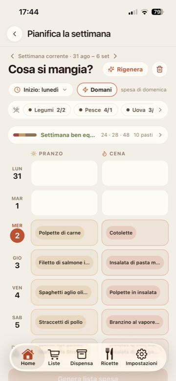
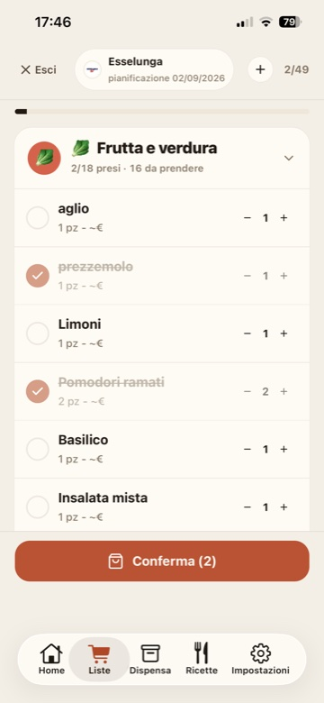
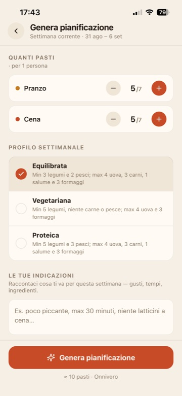
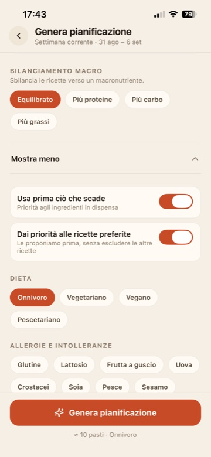
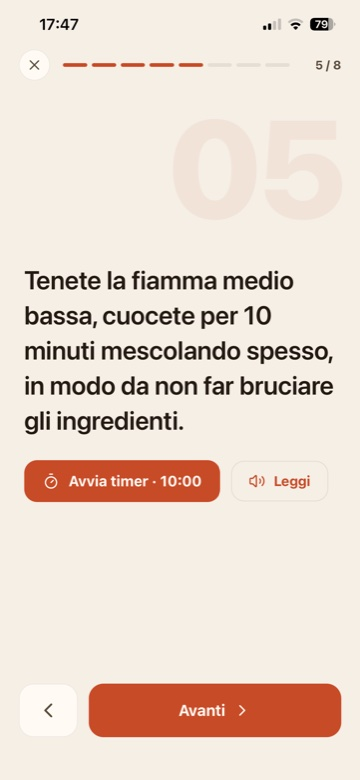
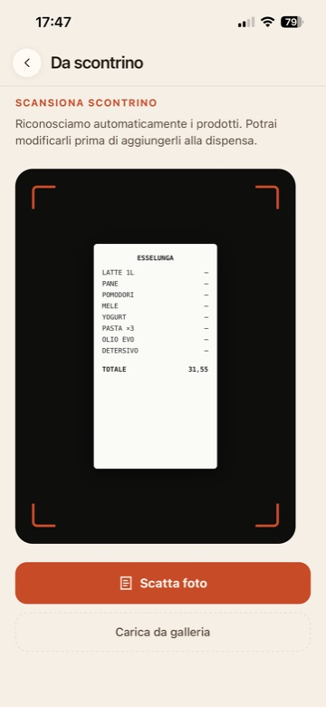

Madia genera la pianificazione dei pasti, ne ricava la lista della
spesa e mette davanti le ricette che svuotano la dispensa. Meno
decisioni ogni sera, più spazio per la parte bella: cucinare.
Niente pubblicitàNiente tracciamentoElimini account e dati quando vuoi


Come funziona Madia
Tre tocchi, e la settimana è risolta.
Il piano nasce dai tuoi gusti, la lista nasce dal piano e le
proposte partono da ciò che hai già in casa. L'automatismo propone,
tu decidi.
Il motore
Piano, lista, svuotamento.
Ogni passaggio prepara il successivo, resta modificabile e non ti
chiede di reinserire le stesse informazioni.
01 / Pianificazione
Il piano si genera da sé.
Scegli quanti pranzi e quante cene ti servono. Madia costruisce
la settimana intorno a quello che hai già, dando priorità agli
ingredienti più vicini alla scadenza.
Rispetta dieta, allergie, cibi da evitare e profilo alimentare.
Capisce indicazioni libere come “max 30 minuti” o “niente
latticini a cena”.
Blocchi i pasti che ti piacciono e rigeneri soltanto gli altri.
Risultato: una settimana modificabile, pasto per pasto.


02 / Lista della spesa
La lista nasce dalla pianificazione.
Partendo dalla pianificazione dei pasti, Madia controlla cosa hai
già in dispensa e aggiunge alla lista solo gli ingredienti
mancanti, ordinati per reparto. Ogni voce resta collegata alla
ricetta per cui serve.
Se cambi un pasto, Madia mostra prima cosa aggiungere e togliere.
La lista attiva si aggiorna solo dopo la tua conferma.
Risultato: una lista pronta per il supermercato.
03 / Svuotamento
Cucini, e la dispensa si scarica.
Seguendo il piano, Madia sa già cosa era previsto e prepara gli
ingredienti e le quantità da togliere, ricetta per ricetta.
Confermi o correggi con un tocco.
Un promemoria serale evita che il passaggio venga dimenticato.
Le scorte restano affidabili senza rifare inventari.
Risultato: meno spreco, meno spesa, dispensa aggiornata.
01Pasto cucinato
02Proposta da confermare
03Dispensa aggiornata
Equilibrio e personalizzazione
Automatica non vuol dire uguale per tutti.
L'automatismo lavora dentro due paletti: come dovresti mangiare e
come ti piace mangiare. Il primo lo tiene Madia, il secondo lo
imposti una volta e vale per sempre.
Profilo settimanale
Equilibrata, Vegetariana o Proteica. Il profilo equilibrato
richiede almeno 3 legumi e 2 pesci e limita uova, carne, salumi
e formaggi.
Controllo prima della lista
I conteggi dei gruppi alimentari mostrano come è bilanciata la
settimana.
Dieta e gusti distinti
La dieta è un filtro rigido; cibi e cucine preferite ordinano
le proposte.
Sbilancia quando serve
Dai più peso a proteine, carboidrati o grassi per una settimana
diversa dal solito.
Macro, priorità alle scadenze e dieta nello stesso foglio.
Dopo i tre tocchi
E il resto si tiene aggiornato da solo.
La spesa confermata diventa dispensa, la dispensa orienta le
proposte, il pasto cucinato aggiorna le scorte. Non reinserisci
nulla: al massimo confermi.
01
Cosa comprare
Lista della spesa
Gli acquisti confermati entrano in dispensa con la scadenza
stimata. Le liste si archiviano, duplicano e condividono.
02
Cosa hai in casa
Dispensa
Quantità, lotti e scadenze in frigo, freezer e credenza guidano
piano, lista e proposte di consumo.
03
Cosa cucinare
Ricette e pasti
Confermi cosa hai mangiato, la dispensa si scarica e ciò che è
finito può tornare in lista.
E migliora con l'uso
Scopre le tue ricorrenze
Dai riacquisti capisce quando finiscono caffè, detersivo o carta
igienica e li ripropone al momento giusto.
Affina le scadenze
Ogni data corretta migliora la durata proposta la volta
successiva.
Impara quanto spendi
I prezzi letti dagli scontrini rendono più utili la stima della
lista e i report mensili.
Ti restano due gesti: confermare la spesa e i pasti cucinati. Tutto il
resto lo tiene aggiornato Madia.
Ogni giorno
Anche i passaggi in mezzo sono già semplificati.
Tra il piano e il piatto ci sono la spesa, le ricorrenze, la
ricetta da seguire e ciò che sta per scadere. Madia accompagna ogni
momento.
In negozio
Ti accompagna corsia per corsia.
La lista generata dal piano arriva già divisa per i reparti del
punto vendita. Scegli catena e negozio, e i più usati di recente
vengono prima.
Modalità spesaUn reparto alla volta, con articoli presi e rimanenti.
Indicatore dei freschiSegnala quando il carrello contiene molti prodotti a breve scadenza.
Checkout in un toccoLa lista spuntata diventa scorte con scadenze proposte.
Lista condivisaResta allineata con chi fa la spesa con te.
Ai fornelli
Segui la ricetta senza toccare niente.
La modalità cottura tiene lo schermo acceso, divide la
preparazione in passaggi singoli e legge quello che devi fare.
Il timer continua anche mentre guardi gli ingredienti.
Un passaggio alla voltaGrande, leggibile e facile da scorrere avanti e indietro.
Timer integratoResta visibile sui passaggi a tempo.
Lettura ad alta voceLegge il passaggio corrente mentre cucini.
Porzioni adattateLe quantità cambiano in base alle persone per cui cucini.

La scorciatoia
Non hai pianificato? Scansiona lo scontrino.
Fotografalo: Madia riconosce prodotti, quantità e prezzi, li
abbina al catalogo e propone le scadenze. Tu controlli e
confermi, così anche una spesa veloce tiene la dispensa affidabile.
Nessuna lista richiestaVale anche per acquisti imprevisti o aggiunti al carrello.
Riconoscimento AILegge righe, quantità e prezzi anche se abbreviati.
Scadenze rapideScorciatoie da 3, 7, 14 o 30 giorni per confermare.
Stime che miglioranoOgni correzione rende più precisa la proposta successiva.
Movimenti e reportPrezzi, spesa e sprechi restano nello storico, compresa la stima in euro del cibo buttato.

01
Acquisti ricorrenti proposti
Madia impara ogni quanto ricompri caffè, sapone o detersivo e li
ripropone solo quando in casa non resta più niente. Puoi rinviare
o saltare con un tocco.
02
Avviso prima che scada
Dalla notifica arrivi al prodotto e scegli se consumarlo,
congelarlo, buttarlo o rimetterlo in lista, anche solo in parte.
Decidi tu quali avvisi ricevere.
03
Prima ciò che scade, poi la stagione
Dispensa, ricette e lista danno priorità a ciò che va usato
subito e distinguono i prodotti di stagione.
Tutto il resto
Le cose che scopri strada facendo.
01
Pasti di oggi, in home
Il piano del giorno è già in prima pagina e puoi confermare cosa hai davvero mangiato. Se è vuoto, chiedi un suggerimento.
02
Importa ricette da link
Incolli un URL: Madia normalizza ingredienti, ordina i passaggi e collega la ricetta al catalogo.
03
Disponibilità ingredienti
Ogni ricetta si confronta con la dispensa, riconosce prodotti simili e aggiunge in lista soltanto ciò che manca.
04
Liste condivise
Collabori sulla stessa spesa e ricevi conferma quando la lista viene ricevuta e salvata.
05
Gestione parziale dei lotti
Consuma due yogurt, congela gli altri prolungandone la scadenza o segnala solo una parte come buttata. Il riacquisto parte quando non resta nulla.
06
Sei temi, chiaro e scuro
Verde, crema e terracotta, taupe, blu, prugna o bianco e nero, ciascuno in chiaro e scuro. Le novità di versione sono nelle Impostazioni.
L'AI in cucina
L'intelligenza che lavora per te, non al posto tuo.
Madia usa l'AI nei punti in cui toglie fatica vera e ti lascia
sempre l'ultima parola prima che qualcosa entri nel piano, nella
lista o in dispensa.
01
Genera il piano settimanale
Interpreta indicazioni libere e rispetta dieta, allergie, gusti e soglie dei gruppi alimentari.
02
Legge gli scontrini
Riconosce righe, quantità, prezzi e negozio, poi abbina ogni voce ai tuoi prodotti.
03
Arricchisce ogni prodotto
Completa categoria, reparto, emoji, durata media, stagionalità e luogo di conservazione.
04
Importa ricette dal web
Trasforma un link in ingredienti normalizzati, passaggi ordinati, nutrizione e stagionalità.
I tuoi dati
Casa tua, dati tuoi.
01
Niente pubblicità
Nessun banner o promozione. Madia è al servizio della tua cucina, non degli inserzionisti.
02
Niente tracciamento
Quello che compri e mangi non crea profili pubblicitari e non viene condiviso con terzi.
03
Elimini tutto quando vuoi
Account e dati si cancellano direttamente dall'app, senza email al supporto o attese.
Madia · Spesa e Dispensa
Generi una volta.La settimana si fa da sé.
Piano, lista e proposte per svuotare la dispensa. Madia risponde
alla domanda di ogni sera; a te resta la parte bella, cucinare.
Presto su App Store
Gratis al lancioIn italianoPensata per la spesa in Italia